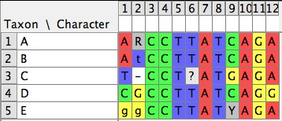
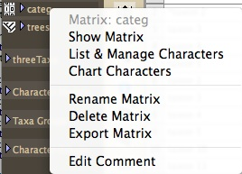
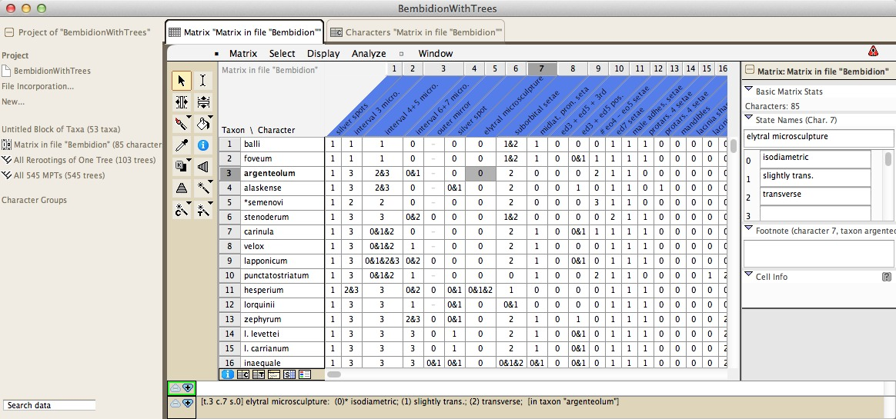
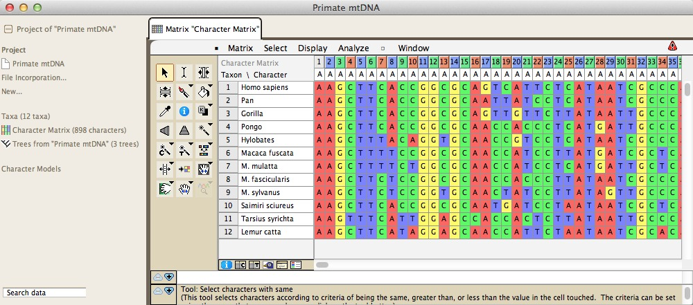
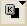
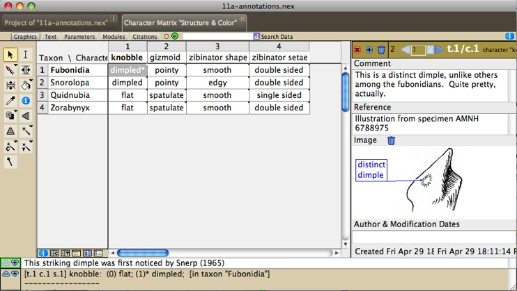
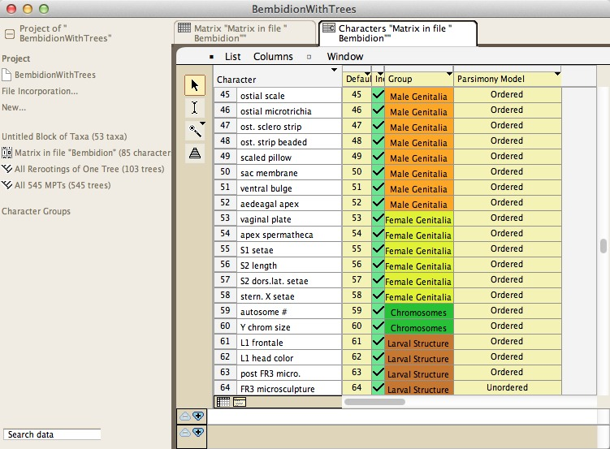

Characters & Matrices
Characters and their character states are means by which to describe the features of organisms. Mesquite supports characters whose states are categorical (discrete and not necessarily ordered), continuous (decimal-valued measurements) or meristic (counts). Special versions of categorical characters exist for DNA, RNA and protein sequence data. For more details specific to those types of characters, see the pages on molecular and continuous characters. Categorical characters other than molecular characters can have 55 states. Meristic characters are whole numbers (and can be negative).Characters can exist within matrices that are stored in a data file. Thus, one matrix may store a series of categorical characters to describe phenotypic features. A separate matrix may store continous characters describing measurements taken from the organisms, while a third matrix may store DNA sequence data, in which each aligned site is treated as a character (Mesquite currently treats unaligned data as if it were aligned, though the alignment can be ignored). Each matrix may have only a single type of character, but a data file may contain more than one matrix.
Characters can also exist outside of matrices. For instance, characters may be created by simulations and randomizations or by ordinations and used directly in calculations, without at any point being captured in a matrix and stored in a file. Thus, the "Source of Characters" used for a calculation can be either matrices stored in the file, or characters generated on-the-fly by simulations or randomizations, or ordinations. For this reason, Mesquite by default asks you what Source of Characters to use when characters or matrices are needed. Because some novice users may find this request confusing, you can set Mesquite to choose Stored Characters or Stored Matrices by default, without asking, by selecting the "Use Stored Characters/Matrices by Default" item in the Defaults submenu of the File menu.
Most of this manual page concerns characters/matrices stored in the data file.
- Types of character matrices
- Creating a character matrix
- Deleting and renaming character matrices
- The Character Matrix Editor
- Changing the attributes of characters
- Charting information about Characters
- Listing all character matrices
- How Character Matrices are Linked to Taxa Blocks
Types of Character Matrices
The standard types of character matrices available in Mesquite are:- Standard Categorical Matrices — States are discrete, not necessarily ordered. Characters can have as many as 55 states, whose symbols by default are 0 - 9, A - H, K - N, P - Z, a - h, k - n, p - z. Polymorphisms (e.g., state 0 and 2) are indicated by 0&2; uncertainty (e.g., state 0 or 2) is indicated by 0/2. A completely unknown state is indicated by ? by default. If the character is inapplicable to that taxon, the symbol is - by default. State names can be assigned using Edit State Names.

- DNA/RNA matrices — Four states, A, C, G, T or A, C, G, U. Standard ambiguity codes (e.g., R = A or G) can be used. By default, unknown state is ?, gap is -. More information on editing DNA data is given here.
 - Protein matrices — Standard symbols for amino acids. By default, unknown state is ?, gap is -. More information on editing protein data is given here.
- Continuous matrices — States are continuous values (e.g. 1.02, 3e-4). A matrix can have multiple items, such as x, y or min, max. Items can be added using the menu items under Matrix>Utilities, or using the matrix information panel (shown using the blue "i" at lower left of the matrix). A special type of continuous matrix, Geographic, has two characters (latitude, longitude). More information on continous data is given here.

- Meristic matrices — States are whole numbers (and can be negative). If the character is inapplicable to that taxon is indicated by an x, not "-" as in other data types, to avoid confusion with the minus sign. Missing data is indicated by a question mark (?). Meristic matrices can have multiple items, which can be added using the matrix information panel (shown using the blue "i" at lower left of the matrix).

Creating a character matrix
There are several ways to create a character matrix to be stored in the file. Most simply, you can create a blank (empty) matrix by choosing Characters>New Empty Matrix. In the dialog box that appears, name the character matrix and specify the number of characters. You will also need to choose the sort of data the matrix will contain (standard categorical, DNA (or RNA) sequence data, continuous, or protein sequence data). Normally, you will create an empty matrix if you are about to start entering observations about organisms.It is also possible to create character matrices that are already filled with character states. For instance, if you want to make a duplicate of an existing character matrix, select Characters>Make New Matrix From>Stored Matrices. If you want to create a matrix from the contents of the clipboard, select Characters>Make New Matrix From>Clipboard. Other choices available under Characters>Make New Matrix From> allow you to make and store matrices resulting from simulations of character evolution, randomizations of existing matrices, or other sources.
Character matrices can also be read from files, including those in NEXUS and other formats that can be imported.
Deleting and renaming matrices
There are three places you can rename and delete character matrices: in the Character Matrix Editor, in the List of Character Matrices window, and in the Project Panel.In the Character Matrix Editor the Current Matrix submenu at the top of the matrix menu has menu items for renaming or deleting the matrix shown in the window.
In the List of Character Matrices window (available in the Characters menu), you can rename a matrix by editing its name directly. To delete matrices, select the rows corresponding to the matrices to be deleted, and selectList>Delete Selected Character Matrices.
To rename a matrix from the Project Panel at the left side of your windows, touch on the name of the matrix until a drop down menu appears:

Choose Rename Matrix from this menu to rename the matrix. You can also use this drop-down menu to delete a matrix.
The Character Matrix Editor
Once you have a character matrix, you may edit it using Mesquite's Character Matrix Editor, available at the top of the Characters menu. This is a spreadsheet editor, similar in style to MacClade's. Because MacClade and Mesquite share the NEXUS file format, for most data files you will be able to edit matrices in either program to use in the other. Below are instructions as to how to edit a character matrix. Most of the editing can be done in the Character Matrix Editor, but some changes can be made in other windows.The Character Matrix Editor is controlled by the Matrix and Select menus, and by the tools in the palette at left. The Matrix menu contains items to change column widths (the Display submenu), change cell coloring, and to alter the character data.
You can request a panel to show information about the matrix and its characters by touching on the blue "i" (
 ) at upper right or lower left of the matrix.
) at upper right or lower left of the matrix.You can have more than one Matrix Editor visible for working on the same matrix. To get a second Editor, choose Extra Matrix Editor from the Characters menu. This may be useful if you want to have the editors set to different views (e.g., one on Birds eye view, or colored as translated to protein).
Note that currently some changes you make to a character matrix cannot be undone!
|  |
| The Character Matrix Editor showing morphological data |
|  |
| The Character Matrix Editor showing DNA sequences |
There are buttons at the lower left of the Character Matrix Editor to open the List of Characters window () and the List of Taxa window (). Reciprocally, the List of Characters window has a button () to show the Character Matrix Editor.
Undo
Mesquite's character matrix editor has some ability to undo the last change made, depending on what that change was. You can request Undo in the Edit menu. Currently, deleting character cannot be undone, nor can deleting taxa. We are working to expand the scope of what can be undone. (If inability to undo concerns you, you may want to turn on automatic NEXUS backup in the Defaults submenu of the File menu, and save frequently.)Adding, deleting, renaming, merging and sorting taxa and characters
There are several methods for adding taxa or characters to an existing matrix. To add taxa, either choose(Character Matrix) Matrix>Add Taxa... or (Taxa) List>Add Taxa... to add taxa to the end of the matrix, or use the Add Taxa tool () in the character matrix to add taxa at the point in the matrix that is touched. To add characters, either choose (Character Matrix) Matrix>Add Characters... to add characters to the end of the matrix, or use the Add Characters tool ( ) in the character matrix to add characters at the point in the matrix that is touched.
) in the character matrix to add characters at the point in the matrix that is touched.To delete existing taxa, either select the taxa in the Taxa List Window (by touching on the taxon's number at the far left), and choose (Taxa) List>Delete Selected Taxa, or select the entire row for the taxa to be deleted (by touching on the taxon's number at the far left) in the Character Matrix and choose (Character Matrix) Matrix>Delete Selected.
To delete existing characters, either select the characters in the List of Characters Window (by touching on the character's number at the far left), and choose (Characters) List>Delete Selected Characters, or select the entire row for the characters to be deleted (by touching on the characters's number at the far left) in the Character Matrix and choose (Character Matrix) Matrix>Delete Selected.
To rename taxa or characters, choose the I-beam tool (
 ) in the Taxa List Window, List of Characters Window, or Character Matrix Window, select the name to be edited, and type the new name.
) in the Taxa List Window, List of Characters Window, or Character Matrix Window, select the name to be edited, and type the new name.Taxa can be merged using Merge Taxa in the Taxon Utilities submenu of the Matrix menu. This will also merge their character states in any matrices. If the two taxa have the same states, this state is used for the fused taxon. If one of the two taxa has missing data or a gap (inapplicable), but the other has a state, the other's state is used (e.g., ? + A = A). If one has a gap and the other missing data, the result is missing data. If the two taxa have differing states which are single states or polymorphic, a polymorphism results(e.g., A + G = A&G). If the two taxa have differing states and at least one is ambiguous, an uncertainty results, unless the ambiguity is entirely contained within the polymorphism of the other (e.g., A&C + C/T = A/C/T; A&C&T + C/T = A&C&T).
To change the order of characters, you can select and drag entire characters in the List of Characters Window or the Character Matrix Editor. You can also us the sort tool (
 ) to sort characters automatically in alphabetical or numerical order of the column or row on which you touch in these windows.
) to sort characters automatically in alphabetical or numerical order of the column or row on which you touch in these windows.Entering character data
You can enter character data either one cell at a time, or using tools that allow entry of multiple cells at once. Tools available are shown in the following table.| Tool |
Action |
|
|
I-beam |
Selects individual cell and allows you to edit the contents of the cell as you would any standard text. |
|  |
Select and Type |
If this tool is active, typing a key will cause that single value to be entered into all selected cells. Cells can be selected with this tool; by holding down the Shift or Command keys, multiple cells can be selected. |
| Paint Bucket |
This tool will quickly fill a block of cells with a particular state. The state ("paint") can be chosen by touching the Eye Dropper on a cell of the appropriate state, or by choosing Set Fill States from the Paint Bucket's drop-down menu. |
|
| Eye Dropper |
This tool, when touched on a cell in the matrix, sets the Paint Bucket's "paint" to the states in that cell. |
Selecting taxa, characters and cells of the matrix
Mesquite has several tools for selecting taxa, characters, or data cells, as described in the following table.| Tool |
Action |
|
| Arrow |
Selects individual or multiple cells. To add or subtract cells to an existing selection, hold down the Command (or Apple) key as you touch on a cell. To extend a selection to encompass a solid block of cells, hold down the Shift key as you touch on a cell. |
|
 |
Wand |
By default, selects all cells possessing the same valued state as the cell touched. That is, if you touch it on a cell with state "1", all cells in the entire matrix with state "1" will be selected. However, using the drop-down menu, you can ask it to choose all cells with a value greater than that touched, or less than. By default, this tool selects cells throughout the entire matrix. Using the drop-down menu, you can ask to to restrict the select to a single taxon, or a single character. Holding down the Shift key will add the new cell to the existing selection. Holding down the Command (or Apple) key will add the new cells to the existing selection if you touch on a cell that is not selected, and will remove the cells from the existing selection if the cell is already selected. |
| Taxon Wand |
By default, selects all taxa possessing the same state within the character touched as that in the cell touched. However, using the drop-down menu, you can ask it to choose all taxa with a value greater than that touched, or less than. Holding down the Shift key will add the new taxa to the existing selection. Holding down the Command (or Apple) key will add the new taxa to the existing selection if you touch on a taxon that is not selected, and will remove the taxa from the existing selection if the taxon is already selected. |
|
| Character Wand |
By default, selects all characters possessing the same state within the character touched as that in the cell touched. However, using the drop-down menu, you can ask it to choose all characters with a value greater than that touched, or less than. Holding down the Shift key will add the new characters to the existing selection. Holding down the Command (or Apple) key will add the new characters to the existing selection if you touch on a character that is not selected, and will remove the characters from the existing selection if the character is already selected. |
Searching the matrix
The contents of the matrix can be searched in two ways. First, enter the text you're searching for in the Search area in the Project Panel (at left of the window) and hit the magnifying glass icon.Second, you can search the matrix using the Find commands in the Edit menu, and the Select by Search in the Select menu. In the Edit menu, Find String... selects the first instance cell in the matrix containing the given string of text. It searches first taxon names, the character names, the the character states within the matrix. You can find subsequent instances using the Find Again command. Find All selects all those cells containing a given string. Find Footnote operates like Find String, except that it highlights cells that contain footnotes with the given text. (To find text within the more elaborate Annotations, you will need to call up an annotations window using the Annotate (pencil) tool in the character matrix editor, then choose Find Annotation in the Notes menu.)
Copy/paste
You can copy taxon and character names from one region of the matrix to another and from one matrix to another. You can also copy one or more cells in the matrix to the Clipboard, and paste them into another region of the matrix, or into another matrix. Mesquite allows you to do with discontinuous selections, as long as the number of cells selected in the first taxon that is selected while copying is the same as the number of cells selected in the first taxon that is selected while pasting, and the same for subsequent taxa. That is, if you select two cells in taxon 3, one cell in taxon 5, and four cells in taxon 7, and copy this to the Clipboard, then when you paste, you must select two cells in the first taxon in which to paste, one in the next, and four in the last.Mesquite will not let you paste a block of cells into the matrix while you have selected a differently shaped block in the matrix. However, if you attempt to do that, Mesquite will offer to change the selection so that covers the same number of cells as in the selection. You may then attempt again to paste.
Editing Names of Characters and States
Character names can be assigned either by editing the column headings in the Character Matrix Editor, or by editing the character names directly in the List of Characters window.The State Names Editor, available by choosing (Character Matrix) Matrix>Edit State Names, allows you to name the states of categorical characters. It will not be available if your matrix is specified as nucleotide or protein data. You can change the orientation (states by characters, or characters by states) of the State Names Editor by touching the double arrow at the top left of the window. Footnotes can be attached to particular states by selecting the state and typing the footnote in the annotation area at the bottom of the window.
Annotations
You can annotate the character matrix by attaching simple footnotes, more elaborate annotations, or colors to the taxa, characters or cells of the matrix. Simple footnotes can be attached by selecting the cell with the arrow or I-beam tool, then going to the white annotation area at the bottom of the window and entering the footnote. More elaborate annotations and colors can be attached using the Annotations Panel, available by selecting Show Annotations Panel in the Display menu. Currently the footnotes and annotations systems are separate in Mesquite — the footnotes appear in the annotation area at the bottom of many windows; the elaborate Annotations appear in a panel embedded in the Character Matrix Editor. An example data file with annotations is at Mesquite_Folder/examples/Basic_Examples/characters/11a-annotations.nexThe annotations panel appears at the right side of the window, as follows:

The annotations panel above shows the annotations (if any) associated with a given taxon, character or cell in the matrix (depending on what was selected with the annotation (pencil) tool). Notes can be added or deleted using the (+) or trash buttons at the top left. One image can be added to each note, and labels can be added to the images using the I-beam cursor. To control appearance of these labels, right click or control-click on the label to get a drop down menu adjusting the font, color and other properties of the label. The label's pointer can be relocated using the Adjust Pointer tool. Other features of the annotations can be accessed using the Annotations submenu of the Display menu. You can search for annotations containing text using the Find Annotation menu item of the Annotations submenu.
Coloring cells of the matrix
Cells or their text can be colored. The default background cell color is chosen in the (Character Matrix) Display>Background Color submenu. Colors to distinguish different cells can be specified using the items in the(Character Matrix) Display>Color Cells and (Character Matrix) Display>Color Text submenus. These submenus specify the color to be used for the background of the cell, or for the text within the cell, according to the following criteria:- Character value — A cell is colored according to a value for the entire character, such as parsimony character steps.
- Cell value — A cell is colored according to a value for that particular cell. For instance, with DNA sequence data, the cells can be colored blue if the site is G or C, white if A or T. By selecting (Character Matrix) Matrix>Moving Window (for colors)..., you can set the size of the moving window over which GC content is averaged. Other cell values are available for amino acid properties (e.g., hydrophobicity)
- Excluded — A cell is colored gray if its character is excluded.
- Footnote present— A cell is colored green if it has a footnote.
- Character State — A cell is colored according to the character state (e.g. different colors for A, C, G, T)
- Annotation attached — A cell is colored green if annotation (not footnotes, but the full complex annotations) are attached to it.
- Assigned Colors — A cell is shown with color as assigned by the paintbrush tool (). To assign a color to a cell, click on the cell with the paintbrush. Touch and hold the button in the tool palette to obtain a menu to select the color used, remove colors or color all selected cells.
Alterations and Transformations
The following are available in the Alter/Transform menu of the Matrix menu to modify the cells or characters of a matrix:- Filling selected cells with a specified state: Choose (Character Matrix) Matrix>Alter/Transform>Fill
- Filling selected cells with random states with equal frequency for all states: Choose (Character Matrix) Matrix>Alter/Transform>Random Fill
- Randomly reshuffle the states within a character among the selected taxa: Choose (Character Matrix) Matrix>Alter/Transform>Shuffle states among taxa
- For nucleotide sequence data, convert the entries in each cell into their complement: Choose (Character Matrix) Matrix>Alter/Transform>Nucleotide complement
- Reversing a selected molecular sequence: Choose (Character Matrix) Matrix>Alter/Transform>Reverse Sequence
- Removing characters consisting of nothing but gaps: Choose (Character Matrix) Matrix>Alter/Transform>Remove Gaps-Only Characters
- Removing invariant characters: Choose (Character Matrix) Matrix>Alter/Transform>Remove Invariant Characters
Changing the attributes of characters
A character, in addition to having states assigned in each of the terminal taxa, may also have other attributes. For instance, a character is marked as included or excluded, and it has assumptions attributed to it, such as a weight and a parsimony model of evolution. These attributes are used in various calculations. They may be assigned in the List of Characters windows, available in the Characters menu.
In the List of Characters window, columns refer to inclusion, parsimony model and probability model (for likelihood calculations). Other columns can be requested for Group Membership, Weight, and (for DNA data) Codon Position. You can ask to show a column using the Columns menu. For each of these columns, the assigned attribute can be changed by first either selecting the characters to be changed (if only some characters are to be altered) or selecting the attribute's column (if all characters are to be altered). Then, by touching the name of the column (where an inverted black triangle should appear), a drop down menu appears that allows you to make the appropriate specification.
For each of the attributes other than group membership, the bottom three menu items are to store to the file the current specification as a named specification set (like saving a typeset or weightset in MacClade), to replace an existing specification set with the current one, or to load a stored specification set to become the current.
The following are the options specific to each column:
- Inclusion - Include, Exclude, and Reverse allow you to change character inclusion. Reverse changes excluded to included and vice versa. Characters that are excluded don't participate in treelength and many other calculations. Exclusion is not universally respected by the calculations, for some calculations use even characters that are excluded.
- Parsimony model - The Model submenu allows you to select a parsimony model to assign to the characters, for use in parsimony calculations.
- Probability model - The Model submenu allows you to select a probability model to assign to the characters, for use in likelihood calculations and simulations.
- Group Membership - The image above shows Group Membership in the last column. The discussion on Character Partitions discusses this feature in depth.
- Weight - With the Set weight menu item you can set the weight assigned to the character. This is used currently on in treelength calculations.
- Codon Positions — This column is available for DNA data. The drop down menu allows you to assign positions.
Character Partitions
Character partitions are defined by specifying the groups to which the characters belonged.To assign characters to groups, you must first create groups using New Group. For instance, you could create a group Adult Characters and another group Larval Characters. Then, you can assign character to the group using the Set Group submenu. You can also edit the color of the group, and rename the group. The group color is useful to distinguish characters of different groups, for instance in charts or in the Character Matrix editor. You can manage your character groups by in the List of Character Group Labels menu available in the Characters menu.
The groups to which the characters are assigned defines the current character partition. To store group assignments as a named character partition, touch on the "Group" title in the List of Characters Window. In the popup menu that appears, choose "Store current partition...". In this menu you can also replace a previously named partition with the current partition, or load a previously defined partition and your current partition.
Here is a video showing some of these features.
Charting information about Characters
Informative statistics and values for characters can be viewed or charted in various windows. In the Analysis menu a Bar & Line Chart can be requested to show the distribution of a value for a series of characters. For instance, the number of parsimony steps in the characters on a current tree can be charted. The Scattergram available in the Analysis menu plots characters in a two dimensional space with the X axis being one particular value (e.g., the character's likelhood under one tree), the Y axis another value (e.g. the character's likelihood under a different tree). Values for characters can also be viewed in the List of Characters window, where columns can be added (in the List menu) to show selected statistics for each of the characters.Listing all character matrices
The List of Character Matrices menu item under Characters brings up a list of character matrices. Here you can view statistics and change names of character matrices.
Character matrices can be marked as "hidden", which means that they will not be included in most menus and dialog boxes in which you can choose matrices, and they will not appear in the project panel at the left of the window. To set the visibility, go to the List of Character Matrices, Column>Visibility of Matrix. Once the column appears, select the rows for the matrices whose visiblity you want to change, and choose Toggle Visibility from the drop down menu at the top of the column.
How Character Matrices are Linked to Taxa blocks
Each matrix is defined with respect to a particular block of taxa and thus is linked to it, or depends on it. Here's a video explaining that: